Personal Projects#
My journey in electronics has been largely shaped by personal projects, a passion that ignited during my time as a student at Michigan Tech and has continued throughout my professional and academic careers. Through the courses I develop, I aim to inspire others to embark on their own project-based learning, driven by the same curiosity and passion that fuels my own exploration. Here are some of my favorite projects from over the years. Enjoy!
Pudding Printer#
As a high school teacher, I was often asked why we didn’t 3D print materials like metals or food. While I could confidently address the infrastructure challenges of metal printing in the classroom, answering the “food” question proved more difficult. My solution? I repurposed my old 3D printer to print pudding!
For this project, I took a large syringe and modified it with a threaded rod. This allowed me to precisely plunge material onto the build plate, which, quite unconventionally, happened to be a graham cracker. What was really cool was that the printer’s X and Y movements stayed exactly the same, powerfully illustrating that CNC machines are all pretty similar under the hood, it’s just the toolhead that really changes things.
Oh, and I managed to make a peanut butter cup…
MIDI Motor Music#
A recurring question from my students was about the distinct noise made by stepper motors. Even though modern drivers have largely silenced them, I wondered if I could amplify that very sound and turn it into music. My solution involved taking a MIDI signal from my computer and routing its various channels to stepper motors. These motors, rigidly bound to a plate, were controlled by a commercial CNC shield on an Arduino. The result? Music, generated entirely without speakers!
The song being played is “Cara Mia Addio” from the ending of Portal 2 if you are interested in hearing the origional.
Animatronics#
Creepy Pete#
Purdue’s sports mascot, “Purdue Pete,” already holds a reputation for being scary, even earning titles as one of college sports’ creepiest mascots. Naturally, I felt obligated to uphold that important legacy.
My first step on this mission was creating an animatronic Pete. After rendering a 3D model of Pete’s head, I integrated addressable LEDs for illuminating the eyes and servos to control head movement:
Future plans involve adding motion tracking and facial recognition so Pete can observe people in the room and change its mood if they stare for too long!
Another addition to this series of projects is “Pete the Dank Engine.” I designed a frightening version of our beloved childhood train characters, equipping it with motors so it could move via a standard RC radio. This creation even served as our Battle Bots team’s first house bot!
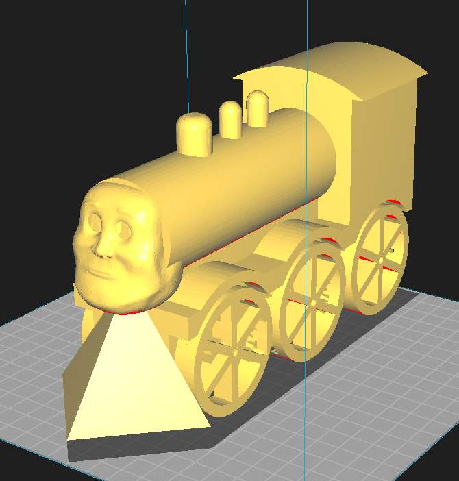 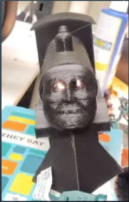My current expedition in this lineage of projects is “Spider Pete.” Think of the baby on the spider chassis from Toy Story 2. Got it? Good.
Chompy the Skull#
Chompy the skull was one of my first ventures into animatronics, and has stuck around in a variety of formats. All of the forms of Chompy have been using clearence plastic skulls from Halloween, and I have carved off the mouth and eyes to allow for movement and whatnot.
Newer versions of Chompy now glow in the dark, and has a better “hand to hold.” Along with that version, I have also made one that sits on my shoulder and “talks” based on control from a remote. It also likes cornbread!
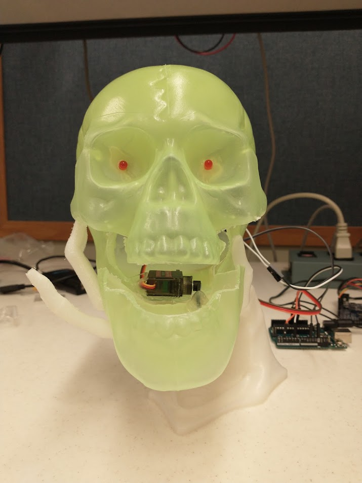 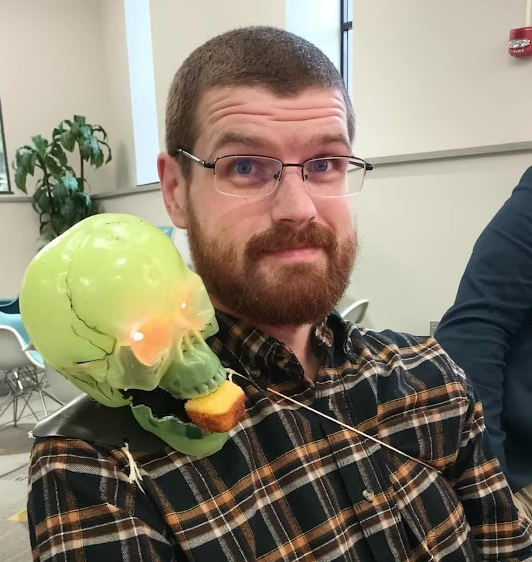I am currently working on a barbershop trio/quartet of Chomppy’s that will take in an audio file, and distribute the sounds based on frequencies. This had limited success last Halloween, and will keep going again once the season rolls back around.
Battle Bots!#
As the founding mentor of our university’s battle bots team, I’ve guided the creation of dozens of robots and even organized public ant and beetleweight competitions. I’m also hands-on, though I lean towards control bots over offensive designs – it wouldn’t be a good look for the mentor to dismantle student projects!
My current go-to bot is FlapJack, a 1lb (antweight) flipper. Its agility lets it swiftly maneuver under opponents, pinning them to the wall. I plan to develop a 3lb (beetleweight) version and improve its wheel protection.
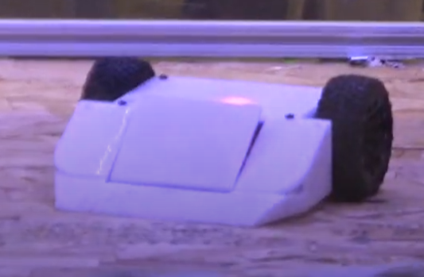Beyond FlapJack, I’m pursuing a highly unconventional design: a single-wheeled bot engineered to maximize kinetic impact. Unlike traditional shell spinners where only the outer layer rotates, my 1lb design aims for the entire robot body to spin, leveraging its full mass for damage. This challenging “Melty-Brain” style, known for its intricate programming, is a fascinating area explored by engineers worldwide. The central dilemma: “How do you control lateral movement when the entire robot is rotating at hundreds of RPMs?” It’s a complex problem to solve.
My efforts on the Melty-Brain bot have, so far, yielded more lessons than victories. I’ve inadvertently set a few batteries ablaze and shorted out multiple motor controllers. One memorable failure involved a power transistor that, due to extreme heat and rapid rotation, literally melted through half an inch of PETG in roughly ten seconds. A testament to the forces at play!
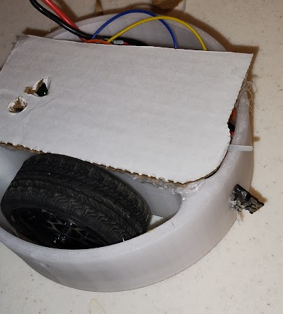Oscilloscope Schenaigans#
Oscilloscopes have a lot of great uses in electronics, but I like to find other fun ways to use them too! One way is making a program that scans an image and outputs a color as an arbritrary waveform that can then be displayed on the scope in XY mode. This allows us to make some great images, and students enjoy the results too!
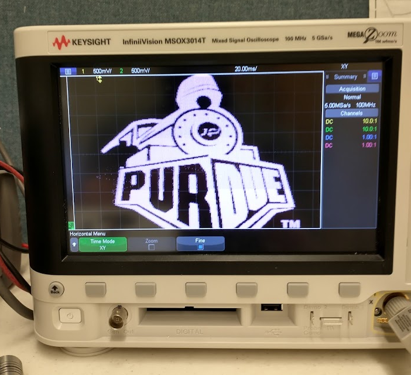Of course, when a student shows me their surpluss scope from the 1980’s I have to have some fun with it too. “Why so Serious?”
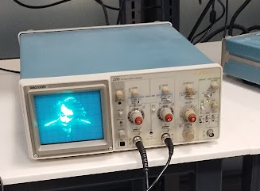“Magic” Wands#
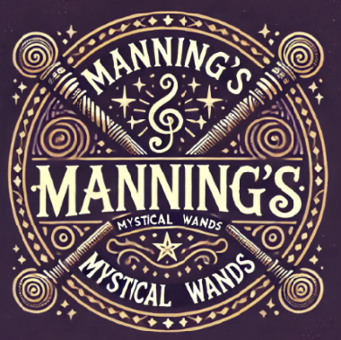That famous book and movie series, rhyming with ‘Scary Plotter,’ has some iconic wand magic that I’ve always dreamed of recreating. Luckily, a certain amusement park offers interactive “magic” exhibits, but only if you fork over cash for their pricey wands. My philosophy? I’d happily spend far more time and money building my own to replicate the magic than buying theirs!
So, when Amanda and I decided to visit this enchanting place, I opted to craft my own wands, hoping they’d fool the exhibits. A bit of research (spoiler!) revealed the exhibits relied on an IR camera picking up specific wand movements. I figured I could fake that feedback. I 3D printed wands with an internal, button-activated IR LED. They weren’t pretty, but they got the job done. I even used different IR wavelengths for good measure.
After sneeking some peeks at the wands in the park, I learned the park’s wands were actually passive, just tiny IR reflectors on the tip. Naturally, I needed an excuse to build new ones.
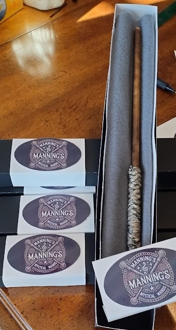A few years later, a friend asked me to make wands for their ‘Scary Plotter’-obsessed daughter’s park trip. This was my chance for more elegant designs, and a reason to dabble with som AI-generated imaging for logos. I used reflective dots and custom-made wands for the whole family. I even wrote an OpenMV program to track wand movements, confirming they worked properly at home! The wands were a smashing success at the park; some attendees even asked if they were for sale. I suppose the good news is if this teaching thing doesn’t work out, I can just go into wand-making…
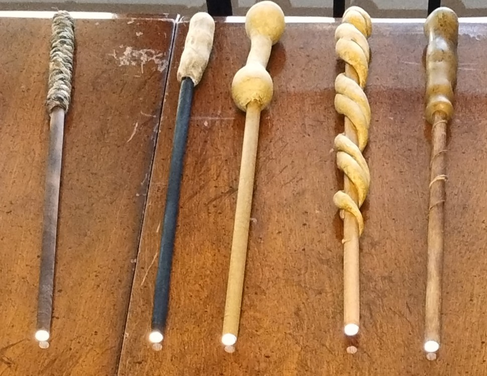Next stepts for this project include making the wands work with our television!